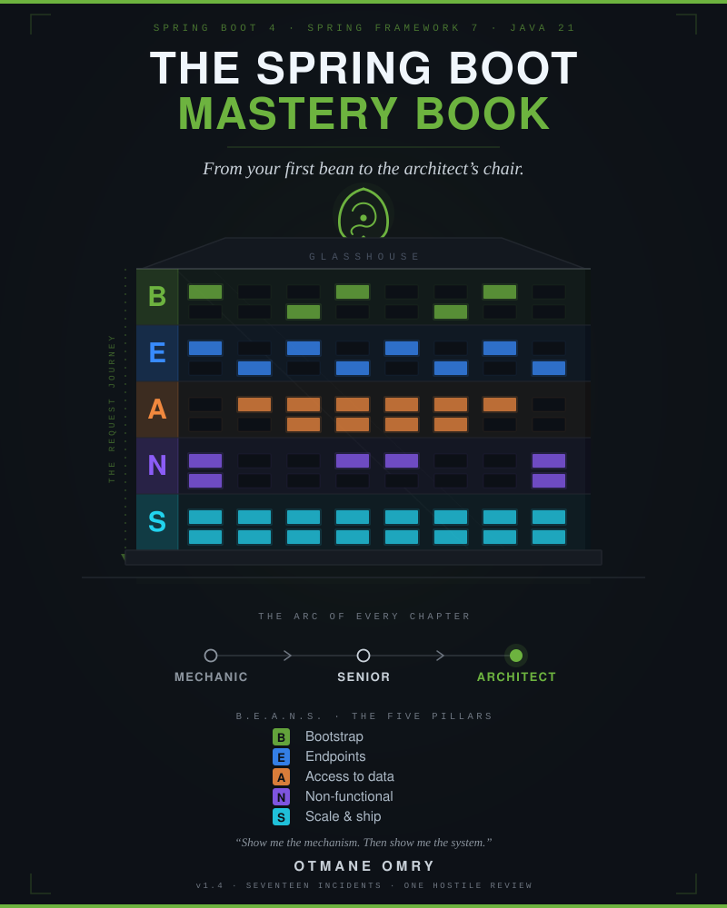

The Spring Boot Mastery Book
Show me the mechanism. Then show me the system. From your first bean to the architect's chair, in seventeen incidents and one hostile review. Spring Boot 4 / Spring Framework 7 / Java 21.
Otmane Omry
Software Engineer & Développeur Full Stack · Java, Spring Boot, React, Angular
otmaneomry.github.io · linkedin.com/in/omryotmane
v1.4 — June 13, 2026 · pure-Java edition · version history in Appendix I · version-sensitive facts audited in docs/VERSION-CLAIMS.md
What this is. The narrative volume of this workspace — the roadmap.sh/spring-boot tree, every topic weighted toward what a senior architect needs in 2026 — and deliberately not everything: the omissions and where to study them are owned in Appendix H. Taught as one continuous story, and built to carry a reader from beginner to principal-architect level. Maya Reyes — eight years of frameworkless Java at Meridian Freight, a logistics firm allergic to frameworks: object graphs hand-wired in
main(), raw JDBC, an embedded Jetty configured line by line; strong Java, zero Spring — joins the team behind a bug-bounty platform and is rebuilt, across one year of outages, audits, lost updates, and 3 a.m. pages, from hand-wirer of everything into principal architect. Every chapter is a realistic production incident that forces one roadmap topic to senior depth and then climbs — to the system-level call behind it: which quality attribute was at stake, what the decision record says, which alternatives lost and why. You don't memorize the concepts; you remember what happened to Maya — and you practice deciding what she should do next, before the text tells you.Who this edition is for. Two readers, one book. If you know core Java — generics, collections, lambdas, basic concurrency — and basic SQL, but nothing about Spring, you are Maya's seat: you learn every mechanism with her, from first principles — the language is the only prerequisite. Each Part opens with a half-page plain-prose primer on its core nouns — read it if Spring is new, skip it without loss if Spring is your day job. If you already run Spring in production, ride the same incidents for what sits above the mechanism: styles, boundaries, consistency, the -ilities, the decision reps. Every chapter opens beginner-reachable and climbs, without condescension at either altitude, to the architecture on top. The arc inside every chapter is the arc of the book: mechanic → senior → architect.
Lineage. This is the pure-Java edition of this workspace's storybook line — the only book the workspace now carries. The prose, cast, incidents, four-beat debriefs, and architect layer descend from earlier editions archived at git tag
books-archive-v1(the .NET-bridged Playbook and both Storybook editions; retrieve withgit show books-archive-v1:docs/<file>). Companion artifact in this workspace:examples/— commented.javadrill files, one folder per topic. Debrief pointers of the form "Playbook Ch.X" resolve against the archived Playbook at that tag.
How to read this edition
Four passes, four speeds:
- The story pass — read it like a novel. But this edition asks one thing of you the original didn't: at every ⏸ Your call beat, stop and commit to an answer — out loud, or in a margin note — before reading the reveal. The plot will pause exactly where an architect would have to decide; predicting is the rep. Retrieval disguised as suspense, never a quiz.
- The debrief pass — re-read only the
## The debriefsections: the four-beat answer (Claim → Mechanism → Trade-off → Failure mode), the story anchors, the interview ammo — and new in this edition, THE ARCHITECT'S LENS: which -ility was at stake, what the ADR records, which alternatives were rejected and why. - The decision pass — replay only the ⚖ Your move, architect forks. Each is a realistic 2–3-option decision; commit, then check your reasoning against the revealed trade-offs. Most forks replay a decision you just watched — argue the losing options at full strength before the reveal; Ch.15 hands you the rubric instead of the answer, and Ch.16–17 hand you the pen. One warning from the index in Appendix D.1: the balanced option wins often but not always — it loses outright at least twice, and one winning call is overturned at the hostile review. If you catch yourself picking the moderate option by pattern instead of analysis, you've stopped doing the rep. And watch for the door: two-way decisions reward keeping options open; one-way doors — the public contract, the consistency model — reward decisive commitment under today's information. At least two forks in this book are one-way doors where "keep it purchasable" is the documented trap.
- The anchor drill — cover the page, recall the scene (the 28-second dashboard…), re-derive the mechanism, then name the -ility it threatened. If the scene won't surface both, re-read that chapter.
The recall hooks (the original four, plus this edition's two):
- B.E.A.N.S. — Bootstrap · Endpoints · Access-to-data · Non-functional · Scale.
- The Request Journey — socket → connector → filter chain → DispatcherServlet → controller →
@Transactionalproxy → repository → persistence context → DB → back. (Born on the Wall in Chapter 5; annotated all year; diagrammed in Appendix E.) - The senior answer skeleton — Claim → Mechanism → Trade-off → Failure mode. Elias's whole curriculum in four beats.
- The -ilities ledger (new) — scalability · availability · evolvability · performance · security · operability · cost — plus the ones specific incidents force onto the table (integrity, maintainability, testability). The architect's actual subject. Every major decision in this edition names which of these it serves and which it taxes; an answer that names no -ility is a developer answer.
- The ADR trail (new) — Glasshouse numbers its Architecture Decision Records, and so does this book. When a chapter mints one (context → decision → consequences, half a page, dated), it joins the trail in Appendix F. Decisions you can't show a record for are decisions you'll re-litigate forever.
- The story anchors — every gotcha is welded to a scene. Recall the scene, and the mechanism comes with it.
A note on temperature. The chapters run hot by design — incident prose stays incident prose. The flat ground is deliberate and lives elsewhere: the plain-prose primers before each Part and the debriefs after each chapter are the rest stops. Use them as such; don't expect the narration to slow down for you.
Spaced callbacks. From Chapter 2 onward, each chapter deliberately re-fires one or two earlier incidents ("this is February's proxy ghost wearing a new coat"). When you hit a callback, pause one beat and re-derive the original mechanism from memory before reading on — that's the spacing schedule working.
The cast
| Who | Role | Why they matter |
|---|---|---|
| Maya Reyes | Protagonist — eight years of frameworkless Java at Meridian Freight: hand-wired object graphs, raw JDBC, Jetty configured by hand. Strong Java, zero Spring | Her plain-Java instincts are the book's recurring device — sometimes a head start, sometimes the trap. Arc in this edition: humbled → mechanic → debugger → teacher → incident commander → system decider → architect. Watch how early she starts making calls that are about Atrium, not about code. |
| Elias Brandt | Principal architect, employee #4, stepping back at year's end | Reviews in green ink; answers questions with smaller questions. His catchphrase — "Show me the mechanism" — is the book's thesis; this edition adds his quieter second question: "and which -ility does it spend?" |
| Priya Sharma | Junior engineer, joins in June | The mirror arc: asks the questions everyone avoids, ships the book's second self-invocation bug, and ends the year receiving the Chapter-1 treatment — from Maya. |
| Idris Okafor | SRE / platform engineer | Owns Kubernetes, on-call, and the Monday brick ceremony. The voice of operational debt — which is to say, the voice of operability, the -ility developers forget until 3 a.m. |
| Lena Park | Product manager | Every technical failure reaches her as money — the cost column of the ledger. Argues the user's side of every trade-off, and teaches Maya that trade-off articulation is a negotiation, not a lecture. |
| @sable | Top external researcher on the platform's own program | Never appears in person — only reports, retest comments, one late-night email. The book's conscience: the outside world, always testing your claims. |
| Marisol Vega | Triage lead | The human face of the workflows the code keeps breaking. "Data integrity" always has a name attached. |
The company: Glasshouse — a bug-bounty and vulnerability-disclosure platform (a mini HackerOne). Companies run Programs; Researchers submit Reports; Triagers validate and route them; Admins manage programs and payouts. The core system is a seven-year-old Spring monolith codenamed Atrium (Spring Boot 4.0.x, Java 21, Maven, PostgreSQL, Kubernetes), later fronted by a gateway, with one service split out where the seam is real. Glasshouse dogfoods itself through its own public program, Stonethrow — people who live in glass houses should invite the stones.
The furniture (recurring memory anchors):
- The Wall — the do-not-erase whiteboard where the Request Journey is born (Ch.5) and annotated all year. In this edition it also accumulates the context map: the borders inside Atrium that eventually decide what splits and what stays.
- "Show me the mechanism." — Elias's catchphrase; it migrates down the succession chain until a new hire hears it from Maya in the book's final line.
- The Canary — the dented rubber canary on the desk of whoever owns the gnarliest bug; you explain the problem to it, out loud, before you may escalate to a human.
- The Brick — the pager-shaped relic handed over every Monday with whatever on-call wisdom the outgoing person has the dignity to admit.
- The green pen — Elias reviews on paper, in green. Where the pen ends up is how the book ends.
- The ADR binder (new) — a thin, unglamorous folder in the repo:
docs/adr/. It starts this book nearly empty. Watch it fill.
Contents
Part I — The Craft
- The Review — her first PR gets 47 green-ink comments. Clean code, SOLID, constructor injection, DTOs at the boundary — and underneath them, the dependency rule, the first seam of a modular monolith, and ADR-001.
Part II — The Container
- The Container — a startup crash and a cross-user data leak. IoC/DI, scopes, the bean lifecycle, circular dependencies — and architecture as something you enforce, not hope for (fitness functions).
- Smoke and Mirrors — triage updates half-save in production. AOP, proxies, self-invocation — and the boundary between leaning on the framework and fighting it.
- The Magic Show — a dependency bump makes a bean vanish, only in prod. Auto-configuration, conditions, config precedence — and evolvability as a supply-chain property.
Part III — The Request
- The Front Door — @sable reports that the API leaks its floor plan. The Request Journey, validation,
ProblemDetail— and API design as contract governance. - The Pool — launch-day 503s with idle CPUs. Thread-per-request, pool exhaustion, timeouts — and availability math: queues, bulkheads, blast radius.
Part IV — The Data
- The Thousand Queries — the 28-second dashboard. Persistence context, N+1,
LazyInitializationException— and performance as a designed property, not a patch. - The Silent Commit — half-saved failures and lost updates. Transactions, rollback rules, locking — and consistency models chosen on purpose.
- The Proxy You Didn't Write — Spring Data, projections, migrations, pool sizing — and the aggregate boundary: where DDD starts paying rent.
Part V — Production
- The Breach That Wasn't — @sable's critical against Glasshouse itself. The filter chain, JWT, CSRF/CORS — and security architecture: token boundaries, trust zones, zero-trust posture.
- Forty Minutes — the CI suite nobody trusts. Slices, context caching, Testcontainers — and the test pyramid as an architectural fitness function.
- Three A.M. — paged blind; then Kubernetes kills healthy pods. Actuator, probes, metrics — and observability as a designed property with an SLO attached.
- The Cascade — one vendor outage takes down everything. Caching, async, circuit breakers — and resilience composition: backpressure, idempotency, honest degradation.
Part VI — The Architect
- The Split — "microservices by Q3." Bounded contexts, the strangler fig, sagas and the outbox, the modular-monolith defense — argued from both sides, on the record.
- Faster — idle threads burn money. Virtual threads vs reactive, native image — and runtime selection as a cost-per--ility decision memo.
- The Architect's Chair — a vague spec, a final design review, a green pen changing desks. System design, the five debug drills, reading framework source, mentoring.
Capstone
- The Hostile Review (new in this edition) — six months later: a due-diligence architecture review by an acquirer's hired guns. Maya defends the whole system — every chapter's decision attacked in one room — and the reader sits the exam with her.
Appendices — A. coverage map (extended) · B. story-anchor index · C. the five debug drills · D. cadence · E. the Wall, rendered (extended) · F. the ADR trail (new) · G. the Architect's Principles & flashcard index (new) · H. the omissions & where to study them (new) · I. version history